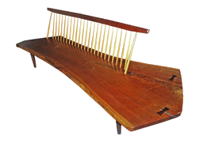

<!DOCTYPE html>

    <head>
        <meta charset="utf-8">
        <meta http-equiv="X-UA-Compatible" content="IE=edge,chrome=1">
        <title>George Nakashima - A Tribute</title>
        <meta name="description" content="">
        <meta name="viewport" content="width=device-width, initial-scale=1.0, maximum-scale=1.0" />

	
        <link href='http://fonts.googleapis.com/css?family=Raleway:400,300,200' rel='stylesheet' type='text/css'>
         <link href="css/bootstrap.min.css" rel="stylesheet">
<link href='http://fonts.googleapis.com/css?family=Droid+Serif:400,400italic' rel='stylesheet' type='text/css'>
        <link href="css/lightbox.css" rel="stylesheet" />
        <link rel="stylesheet" href="css/normalize.css">
<!--            <link rel="stylesheet" href="css/bootstrap.css">-->
        <link rel="stylesheet" href="css/main.css">
        <script src="js/vendor/modernizr-2.7.1.min.js"></script>
        <style type="text/css">
			body {
				font-family: 'Open Sans', sans-serif;
			}
		</style>
    </head>
    <body>
    
      
      
       	
        
                
            
            <!-- Collect the nav links, forms, and other content for toggling -->
        
            	<nav>
                <ul class='navigationLeft' id='page-top'>
                     
                    <li id='brand'>
                        <a data-scroll href="#page-top"
                           data-0="color:rgb( 255, 255, 255)"
    data-2000="color:rgb(34, 34, 34)" data-3000="color:rgb(255, 255, 255)"data-4500="color:rgb(34, 34, 34)"data-5500="color:rgb(255, 255, 255)"data-7500="color:rgb(34, 34, 34)">
                        GEORGE NAKASHIMA
                        </a>
                    </li>
                    </ul>
                    <ul class='navigation'>
                    <li class="hidden">
                        <a data-scroll href="#page-top"
                           data-0="color:rgb( 255, 255, 255)"
    data-2000="color:rgb(34, 34, 34)" data-3000="color:rgb(255, 255, 255)"data-4500="color:rgb(34, 34, 34)"data-5500="color:rgb(255, 255, 255)"data-7500="color:rgb(34, 34, 34)"></a>
                    </li>
                   <li><a  data-scroll href="#biography"
                          data-0="color:rgb( 255, 255, 255)"
    data-2000="color:rgb(34, 34, 34)" data-3000="color:rgb(255, 255, 255)"data-4500="color:rgb(34, 34, 34)"data-5500="color:rgb(255, 255, 255)"data-7500="color:rgb(34, 34, 34)">biography</a>
                    </li>
                    <li>
                        <a data-scroll href="#furniture"
                           data-0="color:rgb( 255, 255, 255)"
    data-2000="color:rgb(34, 34, 34)" data-3000="color:rgb(255, 255, 255)"data-4500="color:rgb(34, 34, 34)"data-5500="color:rgb(255, 255, 255)"data-7500="color:rgb(34, 34, 34)">furniture</a>
                    </li>
                    <li>
                        <a data-scroll  href="#architecture"
                           data-0="color:rgb( 255, 255, 255)"
    data-2000="color:rgb(34, 34, 34)" data-3000="color:rgb(255, 255, 255)"data-4500="color:rgb(34, 34, 34)"data-5500="color:rgb(255, 255, 255)"data-7500="color:rgb(34, 34, 34)"
                           >architecture</a>
                    </li>
                    <li>
                        <a data-scroll href="#resources"
                           data-0="color:rgb( 255, 255, 255)"
    data-2000="color:rgb(34, 34, 34)" data-3000="color:rgb(255, 255, 255)"data-4500="color:rgb(34, 34, 34)"data-5500="color:rgb(255, 255, 255)"data-7500="color:rgb(34, 34, 34)">resources</a>
                    </li>

                </ul>
        </nav>
            <!-- /.navbar-collapse -->

   <div id="skrollr-body">      
        
   
       	 
	        <section id="slide-1" class="homeSlide">
	        	<div class="bcg" 
	        		data-center="background-position: 50% 0px;" 
	        		data-top-bottom="background-position: 50% -100px;" 
	        		data-anchor-target="#slide-1"
	        	>
		        	<div class="container">
			    		<div class="hsContent" data-center="bottom: 200px; opacity: 1" data-top="bottom: 1200px; opacity: 0" data-anchor-target="#logo">
				    		<div id='logo'></div>
			    		</div>
		        	</div>
	        	</div>
		    </section>
		    
			<section id="slide-2" class="homeSlide">
				<div class="bcg" 
					data-center="background-position: 20% 10px;" 
					data-top-bottom="background-position: 20% -100px;" 
					data-bottom-top="background-position: 20% 100px;" 
					data-anchor-target="#slide-2"
				>
			    	<div class="Container" id='biography'>
			    		<div class="hsContent">
				    		
                            <div id='bio-title'
                                 data-center="opacity: 1" 
			    			data-center-top="opacity: 0" 
			    			data--100-bottom="opacity: 0;" 
			    			data-anchor-target="#slide-2  ">
                                <h1 >BIOGRAPHY</h1>
                                <hr />
                                <div id='biography'><p>George Nakashima was born in Spokane, Washington in 1905 and grew up in the forests of the Olympic Peninsula. He received a Bachelor's Degree in architecture at the University of Washington and a Master's from MIT in 1930, as well as the Prix Fontainebleau from L'Ecole Americaine des Beaux Arts in France in 1928. Eventually travelling and studying architechture in Tokyo and India.</p>

<p>In 1940 Nakashima returned to America, and began to make furniture and teach woodworking in Seattle. Like others of Japanese ancestry, he was interned during the Second World War. At the camp he met Gentaro Hikogawa, a man trained in traditional Japanese carpentry. Under his tutelage, Nakashima learned to master traditional Japanese hand tools and joinery techniques. </p>

<p>In 1943, Antonin Raymond successfully sponsored Nakashima’s release from the camp and invited him to his farm in New Hope, Pennsylvania. In his studio and workshop at New Hope, Nakashima explored the organic expressiveness of wood and choosing boards with knots and burls and figured grain. Drawing on Japanese designs and shop practices, as well as on American and International Modern styles, Nakashima created a body of work that would make his name synonymous with the best of 20th century American Art furniture.

                                </div>
                                </div>
                            <div class='images'>
                               <a href="img/bio-pic1.jpg" data-lightbox="roadtrip" data-title="Hall Lippincott and George Nakashima in Palermo, Italy 1928."></a>
                                <a href="img/bio-pic2-big.jpg" data-lightbox="roadtrip" data-title="One of the more modern practitioners of traditional Japanese joinery techniques was George Nakashima, a Japanese-American woodworker, furniture maker and architect, whose grandfather was a samurai warrior. George incorporated these ancient techniques into modern furniture design, and he viewed his craftsmanship as very much a spiritual occupation, transmuting a tree’s beauty into functional art. "></a>
                                <a href="img/bio-pic3-big.jpg" data-lightbox="roadtrip" data-title="George and Marion Nakashima, photographed with their daughter Mira. Family portrait taken by Ezra"></a>
                                <a href="img/bio-pic4-big.jpg" data-lightbox="roadtrip" data-title=" master carpenter and woodworker, George Nakashima had a reverence for trees and their organic forms, flaws and imperfections, that became the intrinsic design element of his now famous furniture."></a>
                            </div>
                            </div>
			    		</div>
			    	</div>
		
			</section>
		    
			<section id="slide-3" class="homeSlide">
				<div class="bcg" 
					data-center="background-position: 50% 0px;" 
					data-top-bottom="background-position: 50% -100px;" 
					data-bottom-top="background-position: 50% 100px;" 
					data-anchor-target="#slide-3"
				>
			    	<div class="hsContent" data-center="bottom: 200px; opacity: 1" data-top="bottom: 1200px; opacity: 0" data-anchor-target="#furn-drawing">
						
						  <div >
				    		
                            </div>
			    		</div>
			    	
			    	
			    </div>
			</section>
			
			<section id="slide-4" class="homeSlide">
				<div class="bcg" 
					data-center="background-position: 20% 0px;" 
					data-top-bottom="background-position: 20% -100px;" 
					data-bottom-top="background-position: 20% 100px;" 
					data-anchor-target="#slide-4"
				>
			    	<div class="Container" id='furniture'>
						<div class="hsContent">
				    	   <div id='furn-title'
                                data-center="opacity: 1" 
			    			data-center-top="opacity: 0" 
			    			data--100-bottom="opacity: 0;" 
							data-anchor-target="#slide-4">
                                <h1>FURNITURE</h1>
                                <hr />
                                <blockquote>It requires a genuine fight to produce one well designed object of relatively permanent value</blockquote>
                            </div>
                            
                            <div class='images01'
                                 >
                               <a href="img/furn1-big.png" data-lightbox="roadtrip" data-title="conoid bench walnut and hickory 1965 studio production"></a>
                             <a href="img/furn2-big.jpg" data-lightbox="roadtrip" data-title="Rocking Chair with Free-Edge Arm by George Nakashima"></a>
                                <a href="img/furn3-big.png" data-lightbox="roadtrip" data-title="George Nakashima Free Edge Platform Bed"></a>
                                <a href="img/furn4-big.png" data-lightbox="roadtrip" data-title=" Double Dresser in Walnut, Free edge top with dovetail case,
eight drawers."></a>
                            </div>
			    		</div>
			    
			    	
			    </div>
			</section>
		    
            
            <section id="slide-5" class="homeSlide">
				<div class="bcg" 
					data-center="background-position: 50% 0px;" 
					data-top-bottom="background-position: 50% -100px;" 
					data-bottom-top="background-position: 50% 100px;" 
					data-anchor-target="#slide-5"
				>
			    	<div class="hsContainer">
						<div class="hsContent" 
                                >
						
						  <div >
				    		
                            </div>
			    	
			    </div>
			</section>
            
            
            <section id="slide-6" class="homeSlide">
				<div class="bcg">
			    	<div class="hsContainer" id='architecture'>
						
			    		<div id='arch-title'
                             data-center="opacity: 1" 
			    			data-center-top="opacity: 0" 
			    			data--100-bottom="opacity: 0;" 
					data-anchor-target="#slide-6">
                                <h1>ARCHITECTURE</h1>
                                <hr />
                                <blockquote>Big city architecture has reached such a profound state of boredom that man might unwittingly destroy it in one last tragic gesture – without humor. 

</blockquote>
                            </div>
                        <div class='images02'
                                 >
                               <a href="img/arch1-big.jpg" data-lightbox="roadtrip" data-title=" The Reception House, 1975-1977 at George Nakashima´s studio and workshop in New Hope, Pennsylvania."></a>
                                <a href="img/arch2-big.jpg" data-lightbox="roadtrip" data-title="George Nakashima's house - New Hope - PA "></a>
                                <a href="img/arch3-big.jpg" data-lightbox="roadtrip" data-title="This interior shot of the pool house, completed in 1960, shows the building's dramatic plywood barrel-vaulted roof"></a>
                                <a href="img/arch4-big.jpg" data-lightbox="roadtrip" data-title="Nakashima House Interior"></a>
                            </div>
			    		</div>
			    	
			    	
			    </div>
			</section>
            <section id='resources'>
                 <div class='container' id='resource-title'>
                                <h1>RESOURCES</h1>
                                <hr />
                            <ul>
                                <li>
                                <a href="http://www.nakashimawoodworker.com">George Nakashima Woodworker</a>
                                </li>
                                
                                <li>
                                <a href="https://www.nakashimafoundation.org">Nakashima Foundation for Peace</a>
                                </li>
                                
                                 
                                <li>
                                <a href="http://en.wikipedia.org/wiki/George_Nakashima">George Nakashima—Wikipedia</a>
                                </li>

                                 <li>
                                <a href="http://www.pbs.org/wgbh/roadshow/fts/sanfrancisco_200304A05.html">George Nakashima: Spiritual Woodworker</a>
                                </li>
                                
                                <li>
                                <a href="https://www.youtube.com/watch?v=Az014_YkDQ0">Nakashima Woodworking—Documentary</a>
                                </li>


                            </ul>


                </div>
               
                
                
            </section>        
		</main>
                </div>
                
        <script src="js/smooth-scroll.js"></script>
        <script src="//ajax.googleapis.com/ajax/libs/jquery/1.9.1/jquery.min.js"></script>
        <script>window.jQuery || document.write('<script src="js/vendor/jquery-1.9.1.min.js"><\/script>')</script>
        <script src="js/imagesloaded.js"></script>
        <script src="js/skrollr.js"></script>
              <script>
      skrollr.init({
        forceHeight: false
      });
    </script>   
                
        <script src="js/_main.js"></script>
 <script src="js/jquery.lazylinepainter-1.1.min.js"></script>
        <script src="js/raphael-min.js"></script>
        <script src="js/main.js"></script>
        <script src="js/lightbox.min.js"></script>
        <script src='js/bootstrap.js'></script>
        <script>
    smoothScroll.init();
</script>
        
        
       <script>
  (function(i,s,o,g,r,a,m){i['GoogleAnalyticsObject']=r;i[r]=i[r]||function(){
  (i[r].q=i[r].q||[]).push(arguments)},i[r].l=1*new Date();a=s.createElement(o),
  m=s.getElementsByTagName(o)[0];a.async=1;a.src=g;m.parentNode.insertBefore(a,m)
  })(window,document,'script','//www.google-analytics.com/analytics.js','ga');

  ga('create', 'UA-41085387-1', 'auto');
  ga('send', 'pageview');

</script>    

    </body>
</html>
